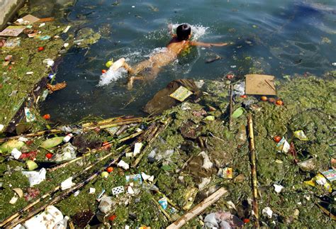
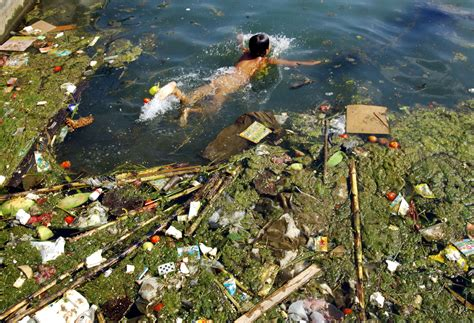
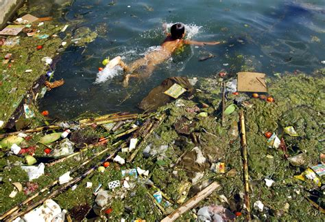

Water pollution is the contamination of water bodies, usually as a result of human activities. Water bodies include for example lakes, rivers, oceans, aquifers and groundwater. Water pollution results when contaminants are introduced into the natural environment. For example, releasing inadequately treated wastewater into natural water bodies can lead to degradation of aquatic ecosystems. In turn, this can lead to public health problems for people living downstream. They may use the same polluted river water for drinking or bathing or irrigation. Water pollution is the leading worldwide cause of death and disease, e.g. due to water-borne diseases.
Water pollution can be grouped into surface water pollution. Marine pollution and nutrient pollution are subsets of water pollution. Sources of water pollution are either point sources and non-point sources. Point sources have one identifiable cause of the pollution, such as a storm drain, wastewater treatment plant or stream. Non-point sources are more diffuse, such as agricultural runoff.Pollution is the result of the cumulative effect over time. All plants and organisms living in or being exposed to polluted water bodies can be impacted. The effects can damage individual species and impact the natural biological communities they are part of.
The causes of water pollution include a wide range of chemicals and pathogens as well as physical parameters. Contaminants may include organic and inorganic substances. Elevated temperatures can also lead to polluted water. A common cause of thermal pollution is the use of water as a coolant by power plants and industrial manufacturers. Elevated water temperatures decrease oxygen levels, which can kill fish and alter food chain composition, reduce species biodiversity, and foster invasion by new thermophilic species.
